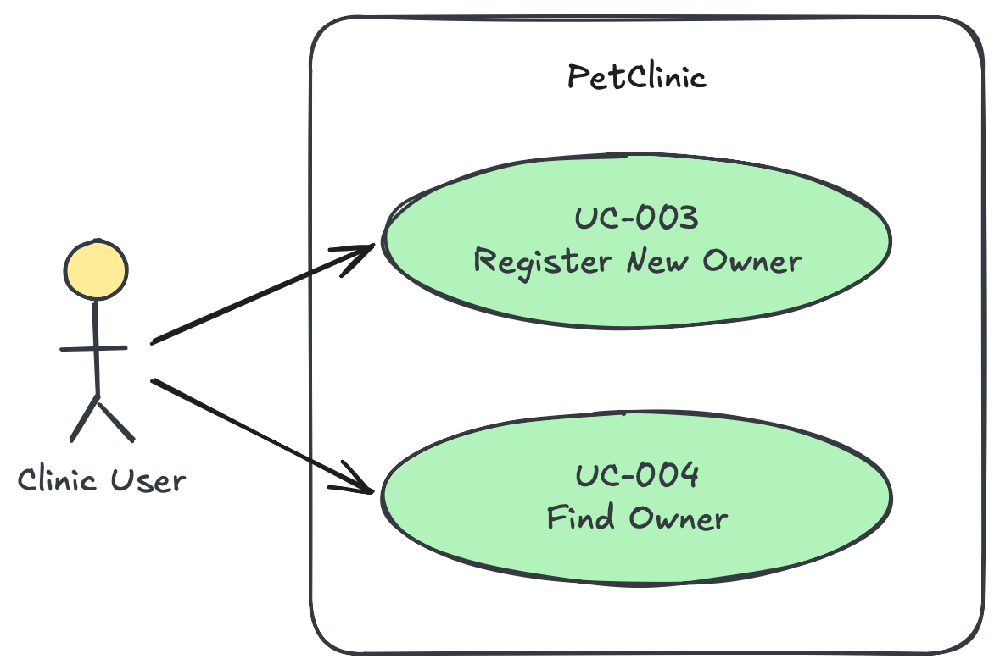
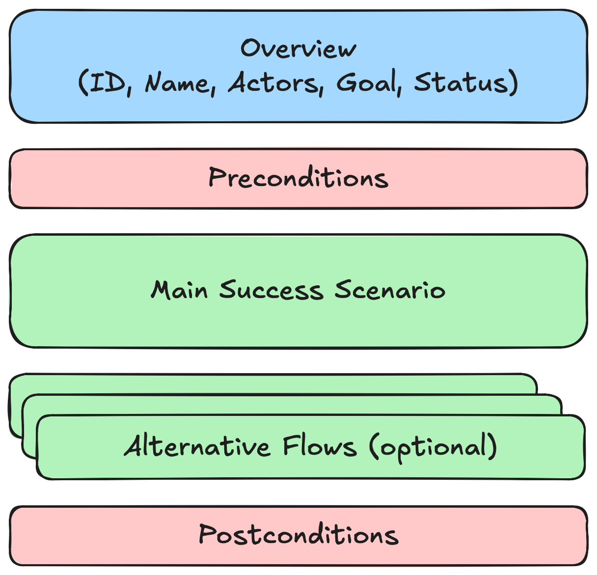

Greenfield or brownfield: brownfield needs existing code as context and more structure
Lifetime: a prototype needs less process than a system that lives ten years
Regulation and audit: traceability from requirement to code can be mandatory
Team size and maturity: more people need more shared artifacts
Size of the context: large monoliths break every method that reads the whole code
Tools change every few weeks: choose the method first, then the tool
Choosing a method10:22
Five frameworks at a glance
Framework
Core idea
Sweet spot
OpenSpec
Change proposals on top of living specs
Changes in existing code, lightweight
BMAD
A team of agent personas
Greenfield, agile flow with AI roles
GitHub Spec Kit
Constitution → specify → plan → tasks
Greenfield features, any agent
Kiro (AWS)
Spec-centric IDE with steering and hooks
One developer, one tool
AI Unified Process
Iterative process based on use cases
Enterprise, brownfield, long-lived systems
Not the same category: a process (AI Unified Process), an agent-team method (BMAD), workflow toolkits (OpenSpec, Spec Kit), a spec-centric IDE (Kiro). Check current versions.
Choosing a method10:25
Describe the system, or describe the change?
AI Unified Process
OpenSpec
What it is
A process: phases, roles, review gates, plus the skills
A lightweight toolkit and workflow
Unit of work
The use case: one user goal, from spec to tested code
The change: a proposal with tasks and spec deltas
Central artifacts
Requirements, entity model, use case specifications
Proposal, tasks, design, specs per capability
Source of truth
The use cases, for the whole lifetime of the system. A change edits the use case; git keeps the history
The specs folder, updated when a change is archived. The reasoning lives in the change history
Sweet spot
Brownfield, modernization, long-lived and regulated systems, several teams
Incremental changes, small teams, quick start
Ask: in five years, where does a new team member read what the system does?
docs/vision.md the vision. That is all the spec there is.
docs/architecture/stack.md which skill builds and tests each layer (part 2)
An empty Spring Boot 4 application with Vaadin 25, jOOQ, Flyway, H2, Browserless and Playwright
Labs10:58
How to work in the labs
You are the requirements engineer. The hotel owners are in the room: ask me
Read what the agent writes. Review is the job, not a formality
When the agent asks a question, answer it. Do not let it guess
Commit after every lab: git add docs && git commit
Note your token usage after each lab (/usage or /context)
Faster than the others? Every lab has a bonus task.
Hands-on11:00–11:20
1
From vision to requirements
/requirementsRead docs/vision.md first
Review
docs/requirements.md: FRs as user stories, NFRs measurable, constraints
docs/glossary.md: one term per concept, no synonyms
Is anything in there that the vision does not say? Who decided it?
Done when
Every actor of the vision has functional requirements
You find the FR for searching available rooms
Every NFR has a number you can test: no fast, no user-friendly
Bonus: add one constraint each for runtime, monitoring and testing
RequirementsLab 1 review
Example: requirements and constraints
| ID | Requirement |
|---------|----------------------------------|
| FR-001 | Guests can search online for |
| | available rooms |
| FR-002 | Guests can reserve rooms online |
| FR-003 | Receptionists can check guests in|
| NFR-001 | Search answers in under 2 s |
| | for 95 % of the requests |
| ID | Constraint |
|-------|----------------------------------|
| C-001 | Runs on the hotel's Kubernetes |
| C-002 | Prices only from the price list |
| | system |
| C-003 | JSON logs with a correlation id |
| C-004 | Every use case has a browser test|
Constraints are input for the agent, not paperwork. Day 2 turns some of them into guardrails.
Break11:20–11:40
BREAK
20 minutes
Commit your requirements before you leave.
Use cases11:40
04 · USE CASES
Why use cases?
One user goal, written so that business, testers and agents read the same thing.
Use cases11:40
Diagram and specification

The diagram: who uses the system for which goal

The specification: one document per use case, after Ivar Jacobson and Alistair Cockburn
Use cases11:43
Use cases and user stories
User story
A placeholder for a conversation
“As a guest I want to cancel a reservation …”
Good for planning, too thin to build from
Lives in the requirements catalog as an FR
Use case
The result of that conversation, written down
All paths: main scenario, alternative flows, rules
Stays in the repository as the current behavior
Realizes one or more FRs: **Requirements:** FR-002
The story says what is wanted. The use case says how the system behaves.
Use cases11:46
Levels of detail after Cockburn
☁️ CloudBusiness process across applications
BPMN
🪁 KiteProcess within one application, a summary use case
BPMN, /business-process
🌊 Sea levelOne actor, one goal, one sitting. The use case we write and build.
/use-case-spec
🐟 FishA sub-function, e.g. “validate address”
Include, or a business rule
Every altitude has its own artifact. An activity in a business process is a sea-level use case. Part 2 turns processes into end-to-end test cases.
Use cases11:49
Behavior, not code
Code-level requirement
“Add POST /reservations/{id}/cancel and a column cancelled_at.”
Describes the how
Only developers can read it
Outdated after the next refactoring
Behavior specification
“A guest can cancel a reservation up to 24 hours before arrival. The system then makes the room available again.”
Describes the what
Every stakeholder can read it
Stays valid when the code changes
Can be tested from the outside
Use cases11:52
Readable by every stakeholder
UC-002 Reserve Room
Actor: Guest
Precondition: The guest has found an available room
Main Success Scenario
1. The guest selects the room and the dates.
2. The system shows the total price.
3. The guest enters name and email and confirms.
4. The system saves the reservation and sends
a confirmation email.
Alternative Flows
4a. The room was booked in the meantime. The system
informs the guest and shows other rooms.
Business Rules
BR-001 A reservation is at least one night.
Who reads it?
End user: is this how I work?
Business: are the rules right?
Developer and agent: what to build
Tester: what to test
No screens, no APIs, no tables in a use case.
Hands-on11:55–12:15
2
Use case diagram and entity model
/use-case-diagram/entity-model
Review
docs/use_cases.puml: is every FR covered? Do the actors match the vision?
One goal per use case? “Manage reservations” is not a goal
docs/entity_model.md: do the names match the glossary?
Done when
You found the UC that realizes searching available rooms and know its number
Attributes have types and validation rules
Bonus: rename one entity and ask the agent to make all docs consistent
Use cases12:15
What makes a use case good for an agent
Do
One user goal per use case
Written from the actor's view
Numbered steps, actor and system take turns
Alternative flows point to their step: 4a
Numbered, testable business rules: BR-001
Link the requirements it realizes: FR-001
Don't
Screens, buttons, APIs, tables
Vague words: fast, usually, appropriate
Rules hidden inside the steps
Guesses: record an open question in docs/open_questions.md instead
If you cannot test it from the outside, it is not a business rule yet.
Hands-on12:20–12:40
3
Specify one use case
/use-case-spec UC-###
Review
docs/use_cases/UC-###-*.md
Can you test every business rule from the outside?
Any screens, APIs or tables in the text? Remove them
Does the **Requirements:** line name the right FRs?
Done when
The agent's open questions are answered or recorded
You would sign it as the hotel owner
Bonus: specify a second use case, e.g. reserving a room
docs/open_questions.md: who answers which question?
Done when
No blocking findings for your use case
Every open question has an owner
Bonus:/spec-review html and open the traceability matrix
Elaboration12:50
Ready for implementation?
Every functional requirement is covered by a use case
/spec-review shows no blocking findings
The customer has reviewed the main use cases
Constraints for runtime, monitoring and testing are written down
Key decisions are written as ADRs
Each open question has an owner
From prompt to skill
The IREB AI4RE prompt guide has 23 free prompt templates along the RE activities. A skill is such a template that also knows the file format and the next step.
Identify requirements
/requirements
Model from text
/use-case-diagram
Specify requirement
/use-case-spec
Check consistency
/spec-review
Wrap-up12:55
What you have now
A requirements catalog and a glossary from a three-line vision
A use case diagram and an entity model
One specified, reviewed use case
Open questions with owners instead of guesses
After lunch, 14:00
The stack file: which skill builds which layer
Implement and test your use case
Change a requirement and watch the tests
Commit and push your docs/ now.
The spec is the work. The code is what the agent derives from it.